All Case Studies
Real problems, thoughtful design, measurable impact: enterprise AI platforms, conversation UX, mobile products and apps built with AI tools.
14 stories, one click each
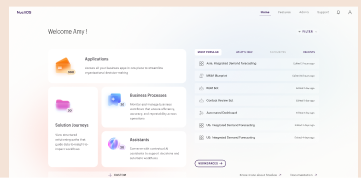
Decision Flow Platform
Multi-model executive AI workflow engine
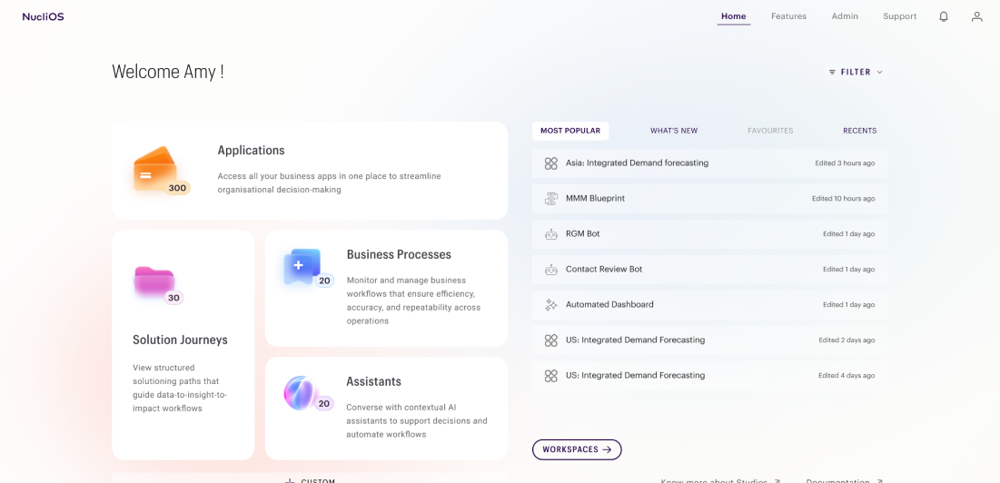
Studios
Organise and manage decision artifacts in one place
Murmur
Social Media Listening
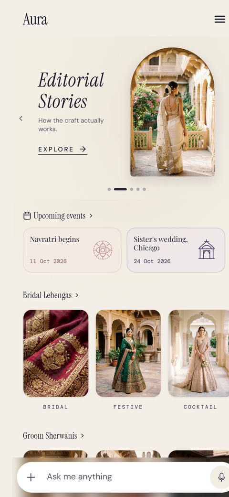
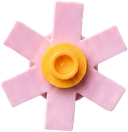
Aura
Conversational Custom Tailoring
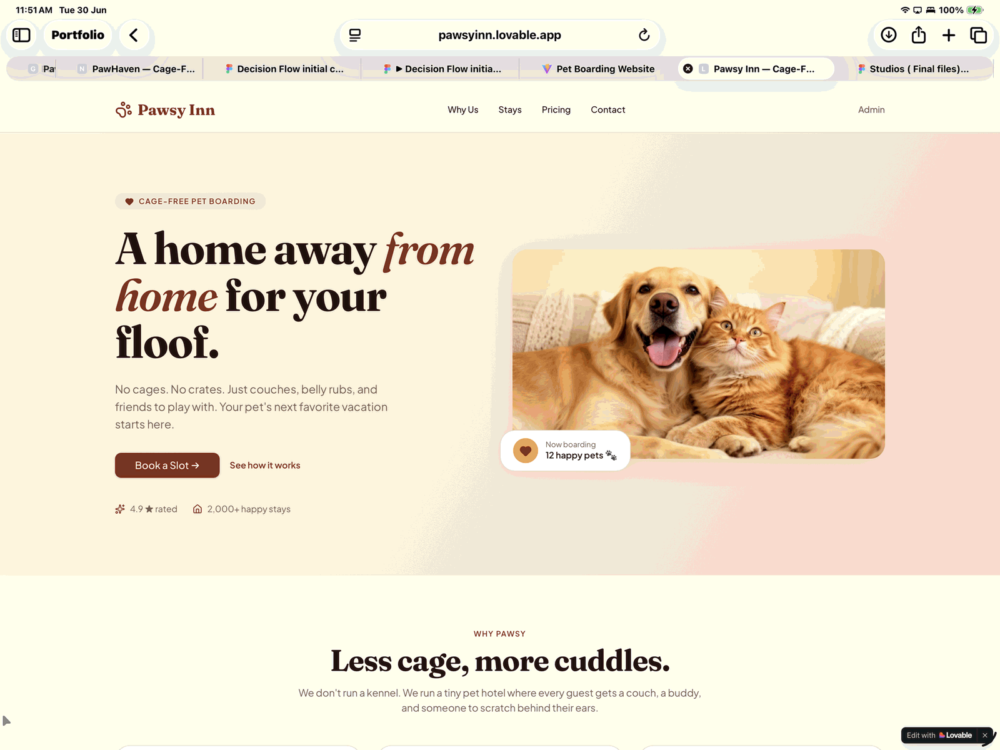
Pet boarding web app
Comparative analysis for real-world use
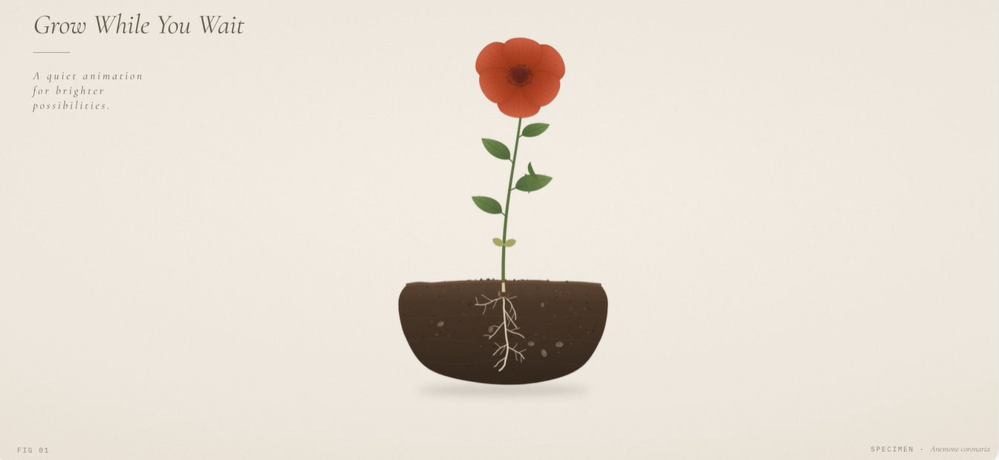
Boring UI
Turning ordinary UI moments into tiny, game-like interactions
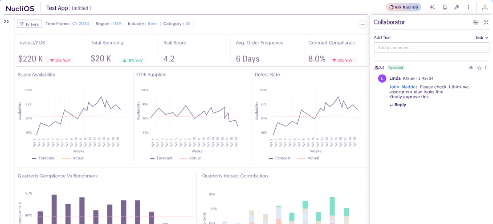
Collaborator
Discussions and decisions in one shared workspace
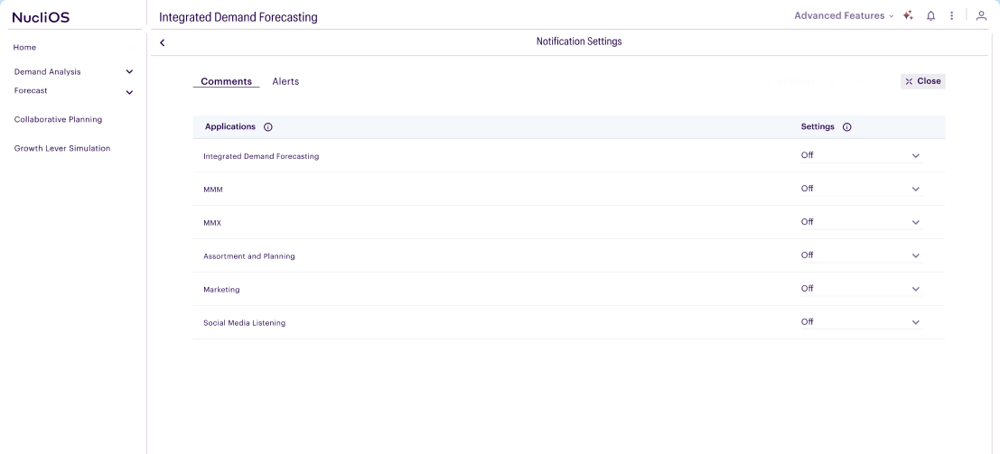
Notification
Timely updates that keep stakeholders aligned
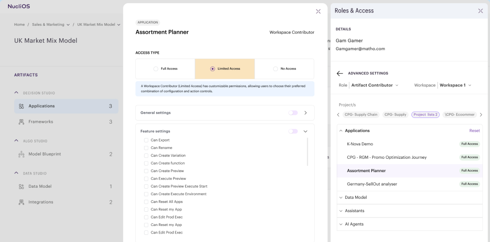
User Management
Roles and permissions for secure collaboration
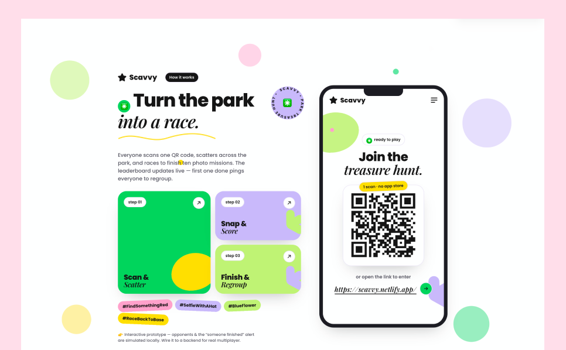
Scavvy Outdoor App
Real-world social treasure hunt & discovery
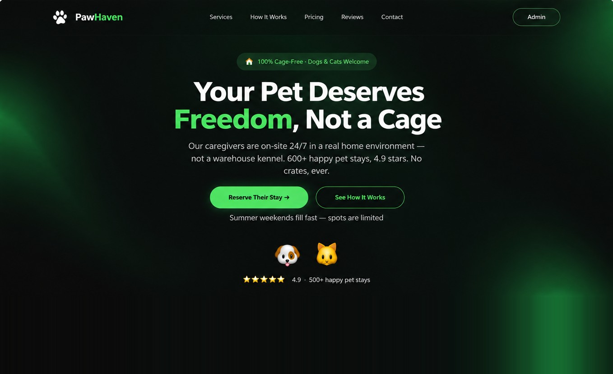
Claude CLI
Pawhaven, a pet boarding app built from the terminal
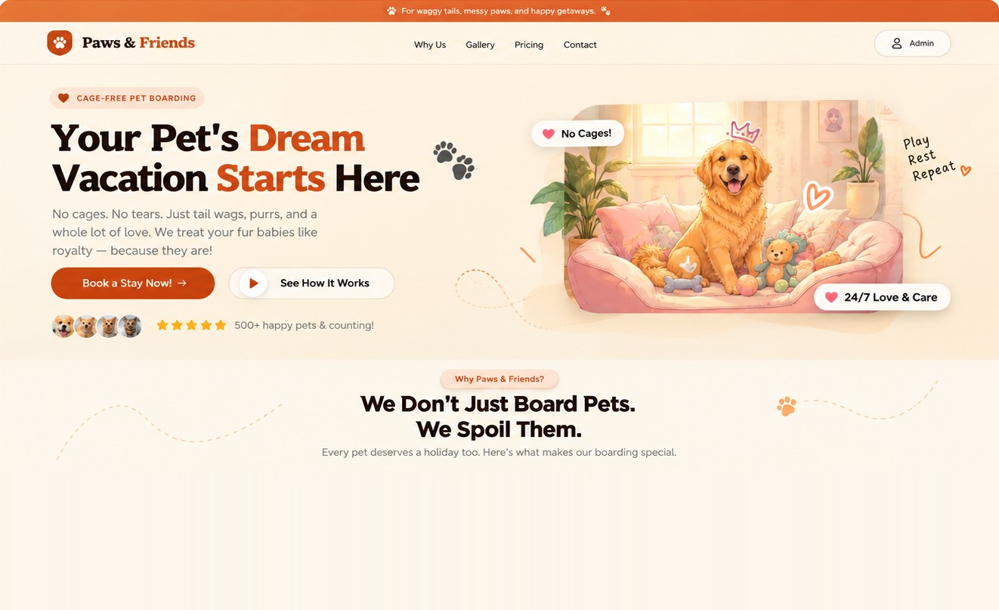
Bolt
Paws & Friends, a pet boarding app built with Bolt
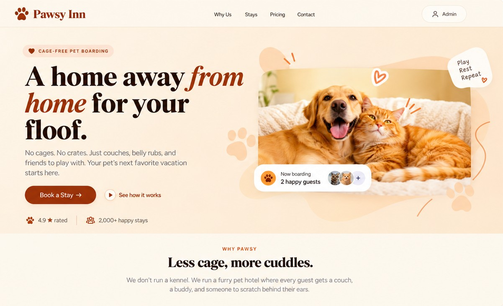
Lovable
Pawsy Inn, a pet boarding app built with Lovable
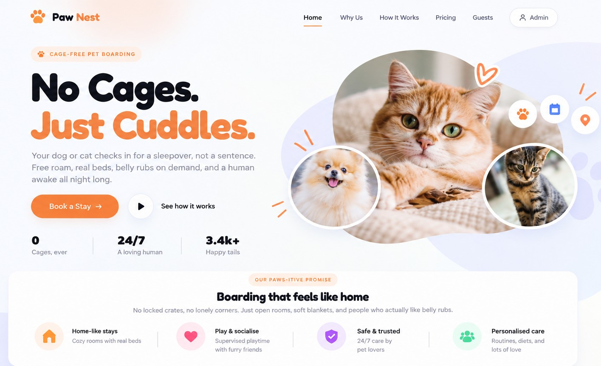
Claude Desktop
Paw Nest, a pet boarding app built with Claude Desktop